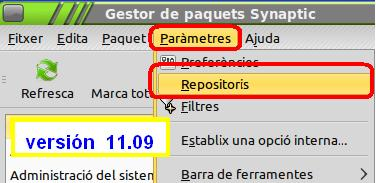
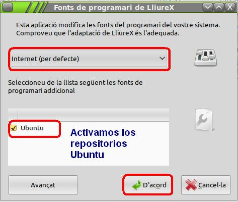
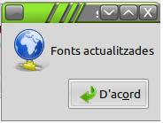
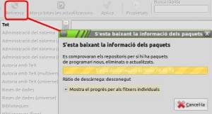

3. Problemas Iniciales y Soluciones
Si es la primera vez que utilizamos nuestro LliureX (versiones 10.09 o 11.09) nos podemos encontrar que, al querer instalar ciertos programas o códecs, el sistema nos muestra un mensaje que no puede instalarlos por problemas de copyright o de permisos.
Esto ocurre, principalmente, al instalar el programa Kdenlive necesario para este curso. Esto se debe a que el Kdenlive requiere de ciertos paquetes que no se encuentran en los repositorios lliureX por defecto.
PRIMER PASO: ACTIVAR FUENTES EN REPOSITORIOS UBUNTU
Para ello debemos activar los repositorios de Ubuntu en nuestro Gestor de paquetes Synaptic:
- Sistema / Administración / gestor de paquetes Synaptic
- Entramos en Parámetros / Repositorios (ver imagen derecha).
- Activamos las fuentes por internet y seleccionamos las fuentes Ubuntu y aceptamos.

Si trabajas en tu centro y no te permite realizar esta opción, o dispones de una réplica local o en el servidor del centro, has de comentar esta salvedad con el Coordinador de Aula o con el Coordinador TIC para solucionar la salvedad.

-  Una vez adicionadas las fuentes, el sistema te mostrará un mensaje de las fuentes actualizadas.
- Es recomendable refrescar los paquetes en la pantalla principal.
SEGUNDO PASO: INSTALAR REPOSITORIO MEDIBUNTU
Medibuntu es un repositorio de paquetes de software (tanto libres como no libres), relacionados con paquetes multimedia, que no pueden ser incluídos en las distribucciones Ubuntu por problemas relacionados con las licencias (copyright).
Estos paquetes son requeridos por algunas aplicaciones (kdenlive, por ejemplo) y que son requeridos por otros paquetes (codecs) para un buen funcionamiento de diversas aplicaciones (crear imágenes ISO, reproducir dvd, codecs propietarios requeridos para visualizar videos, por ejemplo).
Algunos de estas librerías son ilegales en los EEUU, mientras que en España y otros países no lo son. Ejemplo: el lector de DVD.
- Abre un terminal. Aplicaciones / Accesorios / Terminal. Si usas un ordenador del centro requieres de permisos de administrador.
El comando sudo otorga privilegios que permiten suplantar al administrador del sistema (root). Los usuarios o grupos de usuarios que tienen derecho a hacerlo se encuentran en el fichero sudoers. Si tienes dudas contacta con el Coordinador de tu centro o, en este caso, con el ponente del curso.
- Teclea sudo su (superusuari do = hacer de superusuario). Introduce la contraseña y, al aparecer, el símbolo # ya tienes privilegios de superusuario.
- Agregar un repositorio desde la terminal (copia el texto inferior y la pegas en la línea de tu terminal).
sudo wget --output-document=/etc/apt/sources.list.d/medibuntu.list http://www.medibuntu.org/sources.list.d/$(lsb_release -cs).list && sudo apt-get --quiet update && sudo apt-get --yes --quiet --allow-unauthenticated install medibuntu-keyring && sudo apt-get --quiet update
- Teclea sudo apt-get update. Esta instrucción nos actualiza las fuentes de nuestros repositorios.
- Teclea sudo apt-get install libdvdcss2 non-free-codecs (instalamos ciertos codecs que no disponen, en su totalidad, de licencia libre y que pueden ser requeridos para su uso en las ediciones de audio y video).
TERCER PASO: SOLICITA INFORMACIÓN EN LOS FOROS DEL CURSO
En caso de persistir errores en uso, bien de códecs, bien de posible instalación de paquetes, utilizaremos los foros del curso y el correo del ponente para resolver las dudas que puedan surgir.
CUARTO PASO: INSTALA ESTOS PAQUETES PARA PODER SEGUIR EL CURSO
- openshot
- winff
- shutter
- kdenlive
- sox
- flac
- dir2ogg
- vlc
- mjpegtool
- lame
- mencoder
- acidrip
- gogo
- faac
- ffmpeg2theora
- mpg123
- mpg321
Recomendamos instalar los paquetes relacionados con Java y Flash para posibles problemas en el uso de algunos conversores.
- sudo su apt-get install sun-java6-fonts sun-java6-jre sun-java6-plugin flashplugin-nonfre
Durante el curso se te indicará la instalación de otros paquetes.
Jo.R.C.A. 2004 - 2011

Edición de Audio y Video con Software Libre by José Ramón Cerdeira Alonso is licensed under a Creative Commons Reconocimiento-No comercial-Compartir bajo la misma licencia 3.0 España License